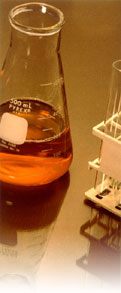

|
Click
below to download our
Laboratory Work Request
Form
 |
DOMESTIC WATER
Is your water safe to drink? Do you have a well?
Periodic testing of your water should be on your “To Do” list.
Play it safe with your private well. Get testing done! Our
laboratory tests waters for constituents such as nitrogen, minerals,
inorganic chemicals and numerous others all handled in a timely
manner insuring regulatory compliance.
Some tests on California’s Title 22 Domestic Water Quality
Monitoring are:
|
Coliform
General Minerals
General Physical
Cu and Pb, 1st Draw
Inorganic Chemicals
Radiological
EPA 502 Volatile Organic Chemical |
EPA 504 DBCP, EDB
EPA 505 Simazine, Atrazine, etc
EPA 507
EPA 508
EPA 515
And others |
We suggest yearly
testing for e-coli, which is a bacterium that can cause flu-like
symptoms. Contact us and find out which tests are right for you.
The State requires that all water purveyors test their
drinking water.
CALL US
AND DETERMINE WHICH TESTS ARE RIGHT FOR YOU!
Certified Sampling Technicians |
Reporting |
Accreditation & Methodology
Domestic Water |
Environmental Monitoring |Irrigation Water
800
228-9896
559
233-6129
fax: 559 268-8174

Hours: Mon-Fri 7 am - 5 pm, PST
|